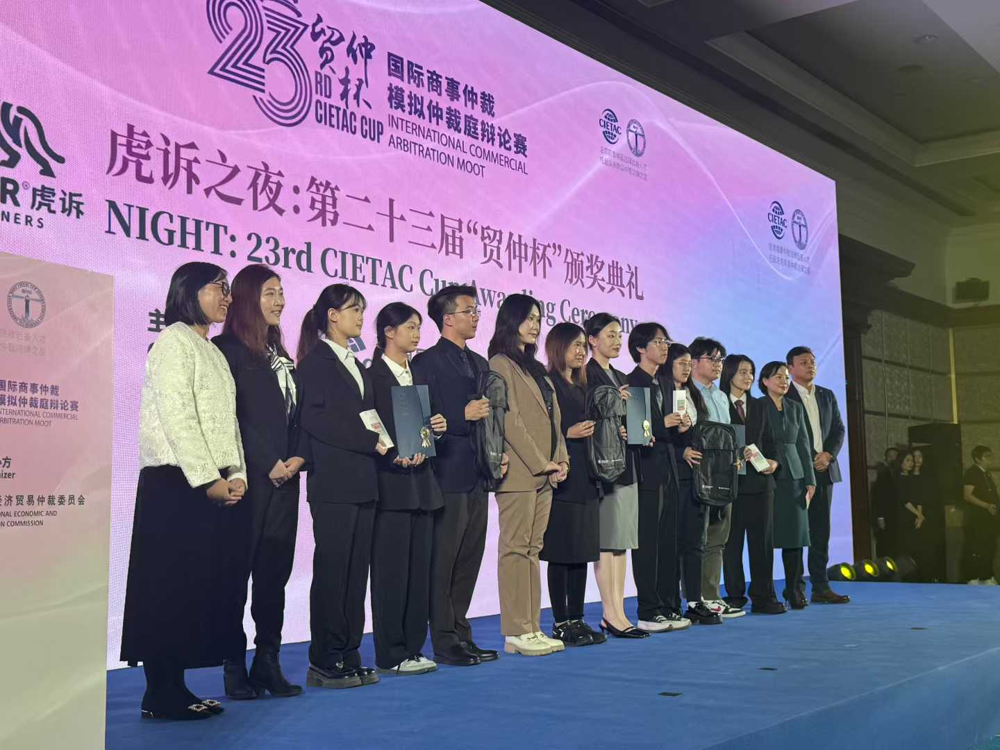
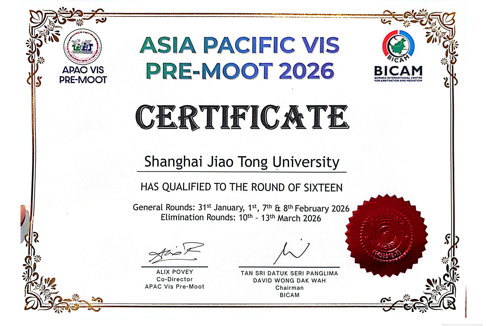
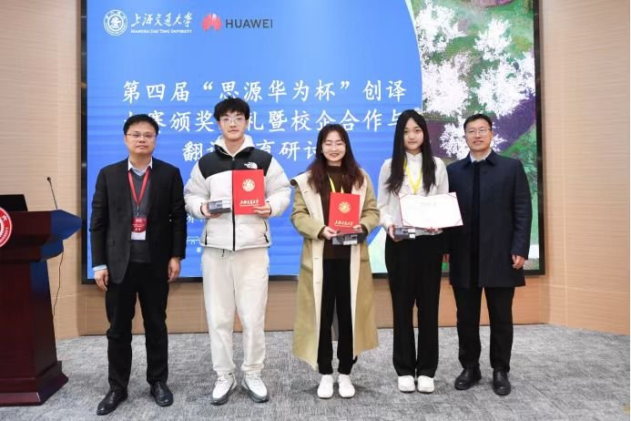
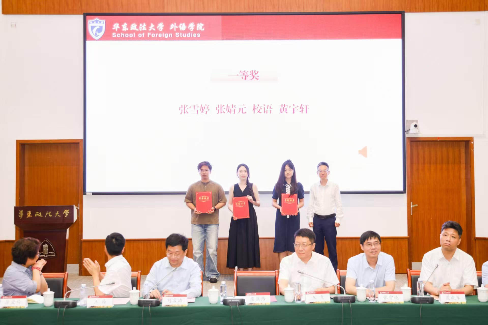
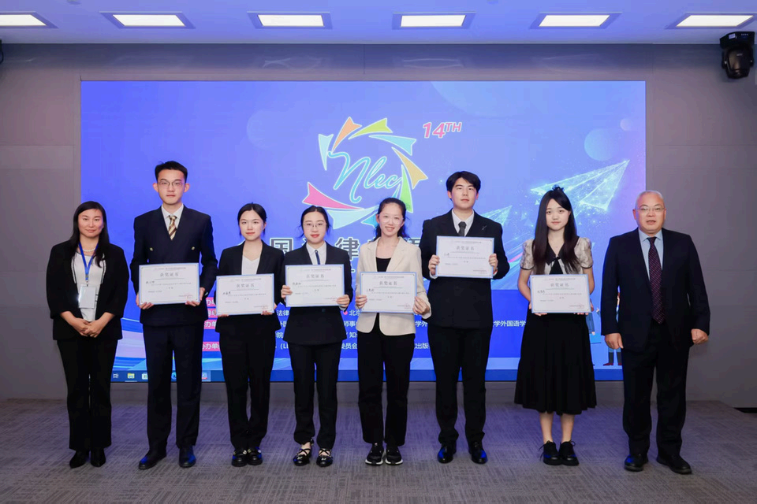
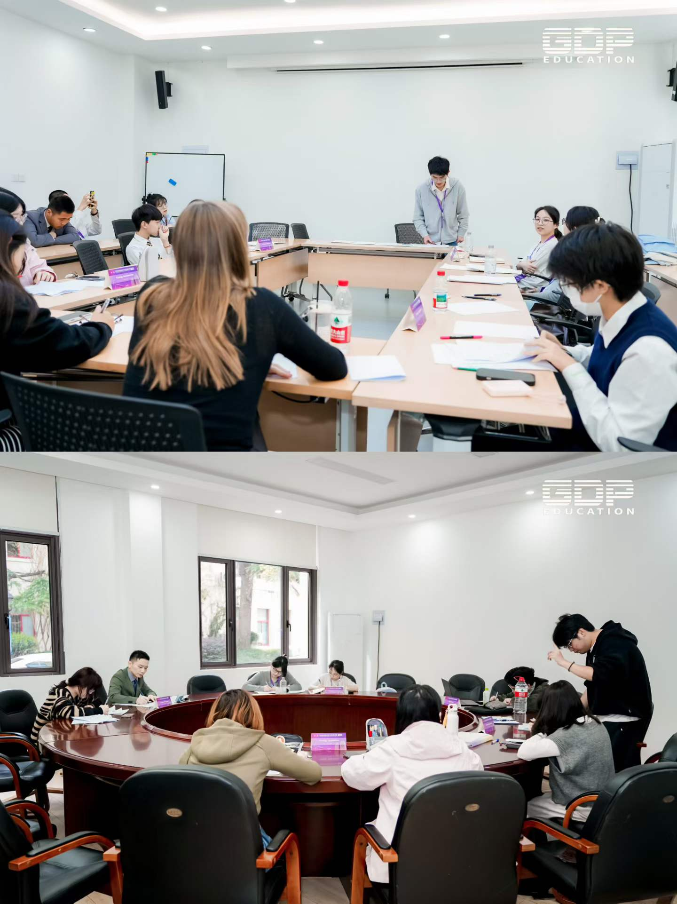
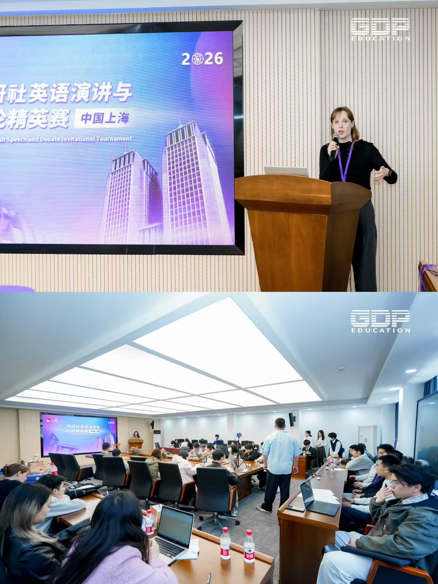
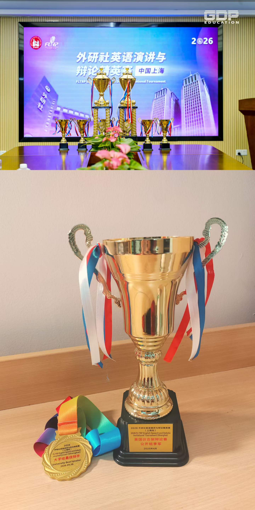

Selected activities in arbitration, translation, research, and volunteer leadership.
International Arbitration
Commercial Arbitration Advocacy Training
Participation in the CIETAC Cup, the Willem C. Vis Moot team, and the Vis APAC competition provided training in memorandum writing, issue analysis, procedural argument, and oral advocacy in international commercial arbitration.
Related results include National Second Prize at the CIETAC Cup and Global Top 16 at Vis APAC.


Legal Translation
High-Level Translation and Legal Language Practice
Competition work in legal translation and legal English has centered on accuracy, register, and the communication of complex legal ideas across languages.
Related results include National Champion in creative translation, National Runner-Up in legal translation, and awards in legal English competitions.



Debate & Public Speaking
English Debate and Oral Advocacy
Debate competitions and moot activities formed an important part of oral advocacy training, with a focus on structured argument, response under pressure, and public communication in English.
This included participation in the FLTRP British Parliamentary Debate Elite Competition and related speaking activities.



Research
Comparative Study on the Governance of Facial Recognition
As part of a national research project, Xueting examined U.S. legal materials relevant to facial recognition governance, organized comparative findings, and prepared research reports to support broader doctrinal analysis.
Focus: comparative legal governance, technology regulation, and transnational legal research methods.
Public Service Leadership
Volunteer Organization and Student Activities
Student leadership work included organizing volunteer programs, community service activities, youth outreach, and class events through the Chenxi Volunteer Service Society, the Youth Volunteer Corps, and class-level student work.
A selection of photographs is included below from these activities.